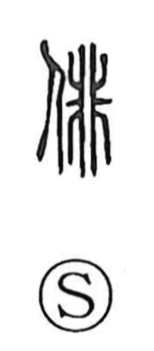

俳

Uncategorized
Kun: | On: hai
actor ・ comic performance ・ haikai ・ haiku
Explanation
俳 is a phono-semantic character formed with the person radical and 非 as the sound sign. Shirakawa explains 非 as the figure of a fine‑toothed comb, its teeth notched symmetrically on both sides; in characters such as 排 and 徘 it serves chiefly to mark the on-reading hai. The Shuowen already glosses 俳 as “to play, sport,” and Shirakawa takes the graph to evoke two people set side by side in playful performance. From this, 俳 came to mean jesting, clowning, and comic acting—hence 俳優, “actor.” In verse, the playful haikai tradition led to 俳句, the independent opening verse that crystallized into a seventeen-syllable 5–7–5 poem.